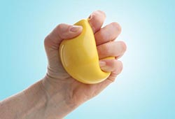

Grip Strengthener

This exercise can make it easier to open door knobs and hold things without dropping them.
• Hold a soft ball in your palm and squeeze it as hard as you can.
• Hold for a few seconds and release.
• Repeat 10 to 15 times on each hand. Do this exercise two to three times a week, but rest your hands for 48 hours in between sessions. Don't do this exercise if your thumb joint is damaged.